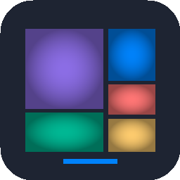

Official Synology DSM Community Package Repository for SynDirStat.
cpan.ziphttps://cpan.zip
SynDirStat v1.0.0-0001Free, open-source native Synology DSM 7 storage visualization inspired by WinDirStat and WizTree. Features high-speed recursive scanning, interactive squarified cushion treemaps, and historical snapshot comparisons.